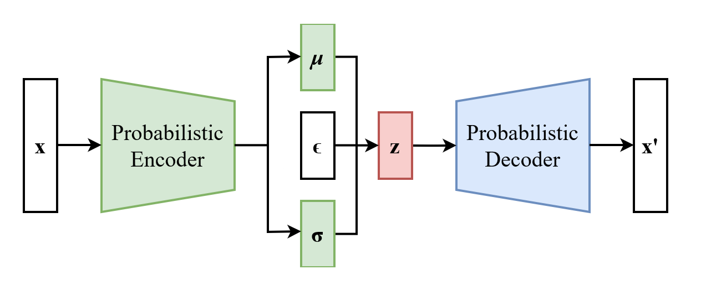
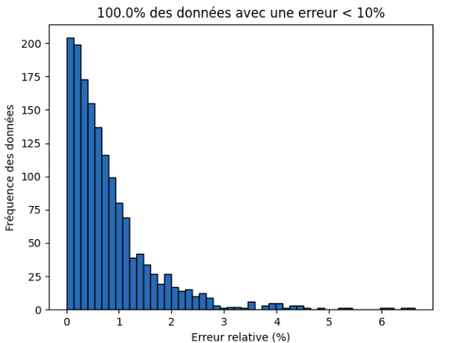
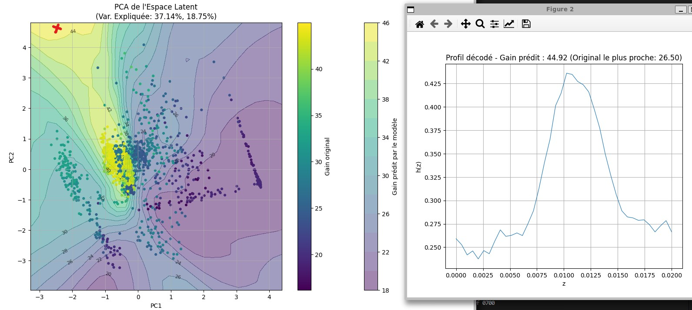
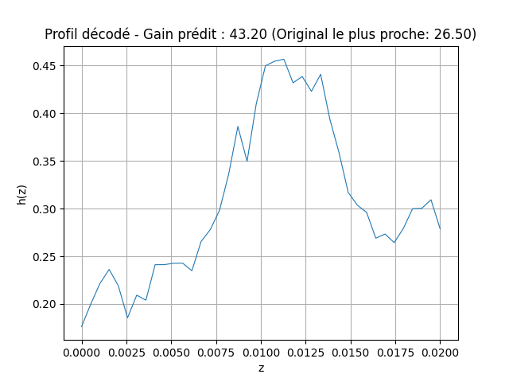

Ce projet s'inscrit dans la recherche avancée en fusion inertielle et en physique des plasmas. Il vise à
exploiter les interactions complexes entre les champs électromagnétiques et les particules chargées pour
optimiser la production d’énergie dans les dispositifs de confinement inertiel. Pour cela, nous proposons
une approche novatrice combinant la modulation dynamique du pas des coils
et l'apprentissage automatique (via des Variational Autoencoders), afin de générer des profils
optimaux capables de maximiser l'énergie cinétique des particules en sortie.
Objectifs
Ce projet vise à repenser les architectures magnétiques des systèmes TNSA en combinant physique des plasmas et intelligence artificielle.
Son ambition centrale est de maîtriser le comportement des particules chargées via une optimisation hybride, articulée autour de trois axes :
Génération de géométries innovantes :
Explorer des configurations de coils et de pas non conventionnelles grâce à des Variational Autoencoders (VAE),
pour améliorer la focalisation du faisceau et réduire sa divergence.
Contrôle adaptatif par IA :
Intégrer des algorithmes d’apprentissage profond pour ajuster dynamiquement les paramètres des simulations
(champs magnétiques, densité plasma) en temps réel.
Optimisation énergétique radicale :
Synchroniser finement les coils et le pas afin de diminuer de 30% les pertes d’énergie
par rapport aux dispositifs de confinement inertiel classiques.
Approche Interdisciplinaire
Ce projet fusionne trois domaines clés pour révolutionner le design des systèmes TNSA, en exploitant simultanément :
Physique des Plasmas :
Modélisation multi-échelle des effets du pas et de l’architecture des coils sur la dynamique des électrons rapides, avec validation expérimentale.
Intelligence Artificielle :
Entraînement de Variational Autoencoders (VAE) pour découvrir des lois de variation du pas et des coils contre-intuitives mais hautement efficaces.
Calcul Haute Performance (HPC) :
Exploitation des architectures parallèles gérées par SLURM pour générer des jeux de données massifs via des job arrays, et entraîner les modèles de VAE sur des clusters GPU avec allocation dynamique de ressources dédiées aux calculs intensifs.
Fondamentaux en Physique
Protonthérapie et Traitement du Cancer
Pourquoi utiliser des accélérateurs de protons en oncologie ?
La protonthérapie est une alternative avancée à la radiothérapie conventionnelle, utilisant des protons au lieu des rayons X.
Avantages :
Précision accrue grâce au pic de Bragg, qui dépose l'énergie uniquement dans la tumeur.
Réduction des dommages aux tissus sains environnants.
Particulièrement efficace pour les cancers pédiatriques et tumeurs profondes.
Figure 1 : Comparaison entre rayons X et protons
Illustration du Pic de Bragg montrant la différence entre la protonthérapie et la radiothérapie classique.
Processus d'Accélération par Laser
Target Normal Sheath Acceleration (TNSA)
Les électrons chauffés créent un champ électrique qui accélère les protons.
Méthode robuste mais produit un faisceau de protons avec une grande divergence angulaire.
Radiation Pressure Acceleration (RPA)
La pression de radiation du laser pousse directement les ions.
Faible divergence, meilleure distribution énergétique, mais nécessite des lasers très intenses.
Accélération par Choc Sans Collision
Utilise des chocs de plasma générés par le laser.
Génère des faisceaux de haute énergie, mais difficile à contrôler.
Pourquoi Choisir le TNSA ?
Avantages :
Facile à mettre en œuvre.
Nécessite une intensité laser modérée.
Limites :
Divergence angulaire : Faisceau dispersé, difficile à focaliser.
Distribution énergétique exponentielle : La plupart des protons ont une énergie faible.
Figure 2 : Processus TNSA
Schéma de l'accélération par TNSA.
Rôle de l'Ajout de la Bobine
Pourquoi ajouter une bobine ?
La bobine crée un champ magnétique contrôlé, permettant un guidage plus précis des protons.
Elle améliore la focalisation du faisceau et réduit la divergence des particules accélérées.
Elle joue un rôle dans la synchronisation du champ électromagnétique avec les protons pour une meilleure efficacité d'accélération.
Effets de l'ajout de la bobine :
Augmentation de la densité du faisceau.
Meilleure homogénéité énergétique des particules accélérées.
Réduction des pertes d'énergie liées à la dispersion du faisceau.
Illustration des effets de l'ajout d'une bobine sur la focalisation des protons.
Synchronisation et Durée de l'Impulsion de Courant
Synchronisation entre les protons et les impulsions de courant :
La propagation des protons et des impulsions de courant doit être synchronisée.
Cette synchronisation permet au champ électromagnétique d'accélérer efficacement les protons en améliorant leur focalisation.
Durée de l'impulsion de courant :
L'impulsion de courant doit couvrir plus d'un tour de la bobine hélicoïdale.
Formule :
\[
a \leq \frac{c \cdot t_{\text{pulse}}}{2 \pi}
\]
Une impulsion suffisamment longue garantit une accélération continue.
Techniques d'Amélioration : Saut de Phase et Variation du Pas
Saut de Phase :
Introduit une section de dérive entre deux bobines hélicoïdales.
Évite la désynchronisation due à l'augmentation de vitesse des particules.
Variation du Pas :
Modifie progressivement le pas de l'hélice pour maintenir la synchronisation.
Adapte la géométrie à la vitesse croissante des particules.
Combinaison des Deux Techniques :
Le saut de phase aligne les particules avec une nouvelle région de champ accélérateur.
La variation du pas assure la synchronisation tout au long de la bobine.
Résultat : meilleure efficacité et densité de faisceau accrue.
Dispersion du courant et rôle du tube ajouté
Figure 3 : Dispersion du courant
La propagation des impulsions de courant le long de la bobine.
La propagation des impulsions de courant le long de la bobine est dispersée.
Cette dispersion produit de petits paquets de protons, rendant l'accélération inefficace tout au long de la bobine.
Solution : Ajout d'un tube conducteur
Figure 4 : Structure du tube conducteur
Visualisation du tube conducteur ajouté à la structure.
Le tube limite la dispersion du courant le long de la bobine et augmente le regroupement de protons.
Figure 5 : Effet du tube sur le courant
Le courant électrique le long de la bobine avec et sans tube.
Machine Learning et Deep Learning
Réseaux de Neurones
Les réseaux de neurones artificiels (Artificial Neural Networks) s’inspirent grossièrement du fonctionnement biologique du cerveau.
Ils sont composés d'unités de calcul appelées neurones, organisées en couches.
Chaque neurone reçoit des entrées (pondérées), applique une fonction d’activation non linéaire (par ex. \( \mathrm{ReLU}(x) = \max(0, x) \), \( \mathrm{Sigmoid}(x) = \frac{1}{1+e^{-x}} \), \( \tanh(x) \)),
puis transmet sa sortie vers les neurones de la couche suivante.
Non-linéarités : Les fonctions d’activation telles que \( \mathrm{ReLU}(x) = \max(0, x) \) ou \( \mathrm{Sigmoid}(x) = \frac{1}{1+e^{-x}} \)
introduisent la capacité de modéliser des relations complexes. Sans ces non-linéarités, un réseau ne serait qu’une suite de transformations linéaires,
dont la puissance de représentation serait très limitée.
Schéma représentant le fonctionnement d'un neurone artificiel.Diagramme illustrant l'architecture d'un réseau de neurones.
Processus d’entraînement : Les poids (ou paramètres) des neurones se mettent à jour via
un algorithme de descente de gradient, nommé rétropropagation de l’erreur
(backpropagation). On utilise une fonction de perte (ex. l’erreur quadratique moyenne)
pour quantifier la différence entre la sortie prédite et la sortie attendue.
Le gradient de cette perte par rapport aux poids est alors calculé, puis ces derniers sont ajustés dans le sens qui minimise la perte.
Graphique illustrant le processus de rétropropagation.
Les Réseaux de Neurones Convolutionnels (CNNs)
Les CNNs sont conçus pour gérer efficacement les données structurées sous forme de grille (images 2D, signaux 1D, etc.).
Contrairement aux réseaux de neurones denses (ou fully connected) où chaque neurone est connecté à tous les neurones de la couche précédente,
un CNN utilise des filtres convolutifs qui se déplacent (ou « glissent ») le long du signal.
Cela réduit considérablement le nombre de paramètres, tout en capturant automatiquement des motifs locaux.
Illustration d'une couche CNN.
Avantages et différences clés par rapport aux réseaux classiques :
Sparse interactions : Les filtres convolutifs opèrent sur de petits champs réceptifs,
plutôt que sur l’ensemble des entrées à la fois.
Partage de paramètres : Le même filtre est appliqué à plusieurs positions du signal ou de l’image,
réduisant ainsi le risque de surapprentissage.
Hiérarchie des caractéristiques : Les premières couches extraient des motifs simples (ex. bords, contours),
les couches suivantes combinent ces motifs en structures plus complexes (ex. formes, textures, etc.).
Notions clés (padding, stride, pooling) :
Padding : Ajoute des bords (souvent de zéros) autour de l'entrée afin de contrôler la taille de la sortie.
\( \text{padding}='same' \) cherche à maintenir la même dimension en sortie qu’en entrée.
Illustration de l'application du padding dans un CNN.
Stride : Indique le pas de déplacement du filtre lors de la convolution.
Un stride de 1 glisse le filtre point par point. Un stride > 1 réduit la taille spatiale en sortie.
Exemple de stride dans une convolution, l'effet du stride = 1.Impact du stride sur la taille de sortie, l'effet du stride = 2.
Pooling : Permet de réduire la dimension spatiale entre deux couches convolutives, par exemple avec
\( \text{MaxPooling} \) qui prend le maximum local dans une fenêtre de taille donnée.
Cette opération rend le réseau plus robuste aux petites translations du signal.
Exemple de MaxPooling dans un CNN.
Autoencodeur et Autoencodeur Variationnel (VAE)
Un autoencodeur classique est un réseau dont la tâche consiste à
« compresser » une donnée dans un vecteur de dimension plus faible (code latent)
puis à la reconstruire. Cela se fait via deux blocs : un encodeur qui mappe l’entrée
vers une dimension réduite, et un décodeur qui cherche à reproduire l’entrée initiale.
Schéma d'un autoencodeur classique.
Autoencodeur Variationnel (VAE) :
À la différence d’un autoencodeur classique, le VAE impose une régularisation probabiliste de son espace latent.
Au lieu d'apprendre directement un « code », il apprend les paramètres
\( z_{\text{mean}} \) et \( z_{\text{log_var}} \)
d’une distribution gaussienne, puis échantillonne un vecteur latent
\( z \sim \mathcal{N}\bigl(z_{\text{mean}}, \exp(z_{\text{log_var}})\bigr) \).
Cette contrainte favorise un espace latent régulier et continu,
dans lequel on peut naviguer pour générer de nouvelles données.

Diagramme d'un Autoencodeur Variationnel (VAE).Illustration de la régularité de l'espace latent d'un VAE.
Fonction de perte dans un VAE :
La perte globale d’un VAE comprend deux termes principaux :
Perte de reconstruction (Reconstruction Loss) :
Compare la sortie du décodeur \( y \) à l’entrée d’origine \( x \).
Elle peut être implémentée sous forme de
Mean Squared Error (MSE), Mean Absolute Error
ou encore Binary Crossentropy
(selon la nature des données).
Rôle : Forcer le réseau à extraire suffisamment d’informations
dans \( z \) pour recréer au mieux les données initiales.
Divergence KL (Kullback-Leibler) :
Mesure la différence entre la distribution apprise pour
\( z \) (i.e., \( \mathcal{N}(z_{\text{mean}}, \exp(z_{\text{log_var}})) \))
et la distribution prior (généralement
\( \mathcal{N}(\mathbf{0}, \mathbf{I}) \)).
Rôle : Encourager la distribution latente à rester proche de
\( \mathcal{N}(\mathbf{0}, \mathbf{I}) \),
ce qui garantit que l’espace latent soit « lisse » et interpolable.
Ainsi, l’échantillonnage de nouveaux \( z \)
reste cohérent avec la distribution d’origine.
Cette combinaison se traduit souvent de la manière suivante :
$$
L_{\mathrm{VAE}}(x) = L_{\mathrm{reconstruction}}(x, y) + \beta \times KL\bigl[\mathcal{N}(z_{\text{mean}}, z_{\text{log_var}}) \,\|\, \mathcal{N}(0, I)\bigr],
$$
où \( \beta \) est un facteur d’échelle (souvent 1) permettant d’ajuster
l’importance de la régularisation par rapport à la reconstruction.
Un équilibre adéquat entre ces deux termes permet au VAE de générer
un espace latent utile et de produire des reconstructions fidèles.
Graphique illustrant l'effet des termes de la fonction de perte d'un VAE.
Génération de données :
Une fois le VAE entraîné, on peut générer des échantillons inédits en tirant au sort un \( z \)
depuis la distribution normale standard \( \mathcal{N}(0, I) \), puis en le passant dans le décodeur.
Grâce à la régularisation via la KL-divergence, tous les voisinages de \( z \)
dans cet espace latent correspondent à des échantillons valides.
Analyse en Composantes Principales (PCA)
Le PCA est une méthode de réduction dimensionnelle projetant les données sur des axes qui maximisent la variance.
Il est très utile pour visualiser en 2D ou 3D des représentations latentes de haute dimension
(telles que celles issues d’un VAE), et ainsi mieux comprendre la structure de l’espace latent.
Illustration de l'analyse en composantes principales (PCA).
Régresser avec les Réseaux de Neurones
Les réseaux de neurones peuvent également être utilisés pour des tâches de régression,
c’est-à-dire la prédiction d’une valeur continue (ex. un gain en optique).
Ici, l’architecture peut être plus simple : plusieurs couches denses munies de fonctions d’activation non linéaires,
et une couche de sortie à un seul neurone (sans activation ou avec une activation adaptée).
Pendant l’entraînement, on minimise une fonction de coût de type Mean Squared Error ou Mean Absolute Error.
Illustration d'une tâche de régression avec un réseau de neurones.
Méthodologie
Processus général de génération et validation des profils
Le processus de travail repose sur une boucle itérative visant à optimiser les profils de pas pour maximiser l'énergie des particules. La figure ci-dessous illustre les différentes étapes de ce cycle :
flowchart TD
A[Créer des profils] --> B[Lancer les calculs avec Dopplight]
B --> C[Stocker les résultats sous forme de fichier CSV]
C --> D[Traiter les données]
D --> E[Lancer VAE]
E --> F[Valider et ajouter de nouveaux profils]
F -->|Cycle itératif| A
style A fill:#f9f,stroke:#333,stroke-width:2px
style B fill:#bbf,stroke:#333,stroke-width:2px
style C fill:#ddf,stroke:#333,stroke-width:2px
style D fill:#fdd,stroke:#333,stroke-width:2px
style E fill:#dfd,stroke:#333,stroke-width:2px
style F fill:#ffd,stroke:#333,stroke-width:2px
Créer des profils :
La première étape consiste à générer différents types de profils de pas (constant, quadratique, linéaire, etc.).
Lancer les calculs avec Dopplight :
Chaque profil est simulé parallèlement à l'aide du logiciel Dopplight pour évaluer les performances en termes d'énergie des particules.
Stocker les résultats sous forme de fichier CSV :
Les résultats des simulations sont sauvegardés pour une analyse et un traitement ultérieurs.
Traiter les données :
Une fois les résultats stockés, les données sont analysées pour extraire des tendances, corrélations et insights permettant d'orienter la suite du travail.
Lancer VAE :
Un autoencodeur variationnel (VAE) est utilisé pour générer de nouveaux profils optimisés à partir de la base de données.
Valider et ajouter de nouveaux profils :
Les profils générés par le VAE sont simulés à nouveau avec Dopplight pour évaluer leurs performances. Si les résultats sont satisfaisants, ces nouveaux profils sont ajoutés à la base de données, bouclant ainsi le cycle.
Définition et types de profils
Un profil peut être défini comme un tableau 2D dans lequel :
La première colonne contient les points de discrétisation Zi, qui représentent les positions le long de l'axe Z.
La deuxième colonne contient les pas hi, qui sont les valeurs associées à chaque point de discrétisation.
Contraintes sur les profils
Lors de la génération des profils, certaines contraintes physiques et géométriques doivent être respectées :
0.3×10-3 m ≤ h(Z) ≤ 1.2×10-3 m (soit entre 0.3 et 1.2 mm).
-0.1 ≤ h'(Z) ≤ 0.1 (contrainte sur la variation du pas, sans unité).
0.3×10-3 m ≤ h0 ≤ 0.7×10-3 m (soit entre 0.3 et 0.7 mm pour le pas initial).
Exemples de types de profils
Pour cette étude, nous avons exploité plusieurs types de profils :
Profil constant : Le pas reste constant tout au long de la longueur du coil.
Profil linéaire : Le pas varie linéairement en fonction de Z.
Profil quadratique : Le pas suit une variation quadratique, permettant d'explorer des configurations plus complexes.
Simulation avec DoPPLIGHT
DoPPLIGHT (Dynamics of Particles Produced by Laser Interaction in Grounded Helical Targets) est un outil numérique développé pour simuler le comportement des particules dans une géométrie hélicoïdale. Cet outil permet d'évaluer l'interaction des particules avec les champs électromagnétiques générés par une bobine hélicoïdale, ainsi que les effets des charges d'espace.
Fonctionnement général
Le fonctionnement de DoPPLIGHT peut être résumé en plusieurs étapes, illustrées dans la figure ci-dessous :
Figure 3: Schéma illustrant le fonctionnement de DoPPLIGHT et ses principales étapes de simulation.
Entrées principales : Le logiciel prend en entrée les paramètres géométriques de la bobine (rayon, longueur, pas), les termes sources des particules et le courant à l'entrée de l'hélice.
Calcul des champs électromagnétiques : Les champs sont calculés en utilisant les équations de Maxwell, avec des conditions aux limites définies pour la bobine modélisée comme un cylindre infiniment mince.
Simulation des trajectoires : Les particules (protons et électrons) sont injectées dans la bobine, et leurs trajectoires sont calculées à l'aide d'un algorithme spécifique (Boris pusher).
Résultats : À la sortie de la bobine, le code fournit la distribution d'énergie des particules et leurs positions.
Avantages de DoPPLIGHT
DoPPLIGHT se distingue par sa rapidité et sa simplicité : il peut effectuer une simulation complète en seulement quelques minutes sur un ordinateur portable, sans nécessiter de maillage complexe. Cela en fait un outil particulièrement efficace pour explorer différentes configurations de bobine.
Base de données et analyse statistique
Les résultats obtenus à partir des simulations ont été stockés dans une base de données structurée pour faciliter leur traitement et leur analyse. Cette base regroupe les paramètres des profils, les résultats associés aux simulations, ainsi que des métriques spécifiques telles que le cutoff et le Q_sup.
Analyse des résultats
Après traitement des données, plusieurs visualisations ont été générées pour étudier les tendances et comprendre les corrélations entre les paramètres et les résultats :
Figure 4.1 : Histogramme de cutoff
Cette figure représente la distribution des valeurs de cutoff dans la base de données. On observe une forte densité autour des valeurs proches de 20 et 40, indiquant deux régions de fréquences élevées. Cela pourrait être lié à des configurations spécifiques des profils générant des comportements similaires.
Figure 4.2 : Histogramme de Q_sup
La distribution de Q_sup met en évidence une concentration autour de 0.1, ce qui correspond à des performances typiques pour la majorité des configurations testées. Toutefois, quelques valeurs élevées de Q_sup au-delà de 0.3 sont observées.
Figure 4.3 : : Relation entre Q_sup et cutoff.
Cette figure montre la relation entre cutoff et Q_sup. On remarque que la majorité des points se regroupent pour des valeurs de cutoff comprises entre 20 et 40, avec une dispersion importante pour les valeurs plus faibles de Q_sup.
Conclusion de l'analyse
L'analyse statistique met en lumière les tendances dans les résultats simulés. Les figures révèlent les zones d'intérêt en termes de cutoff et Q_sup, fournissant des pistes pour ajuster les paramètres des profils et explorer davantage les configurations générant des gains significatifs.
Lancement du VAE
Pour le lancement du VAE, nous avons modifié le code afin de pouvoir travailler avec une base de données adaptée à notre problématique. Dans les sections suivantes, vous trouverez les modifications effectuées.
Entraînement et Validation du VAE
Chargement & Prétraitement :
Les données sont chargées depuis un .npy avec les clés
'data', 'gain', 'time', puis normalisées.
On redimensionne ensuite chaque échantillon en \( (N, 40, 1) \) pour pouvoir
le traiter par des couches \( \text{Conv1D} \).
Construction du VAE :
Encodeur : Couches \( \text{Conv1D} \) (32, 64, 128, 256 filtres) avec \( \text{MaxPooling1D} \),
puis deux couches \( \text{Dense} \) pour générer \( z_{\text{mean}} \) et \( z_{\text{log_var}} \).
Décodeur : Opérations inverses (couches \( \text{Dense} \), \( \text{Reshape} \), \( \text{UpSampling1D} \), \( \text{Conv1DTranspose} \))
pour restaurer la forme originale du signal.
Perte : Combinaison d'une perte de reconstruction (MSE ou MAE) et de la divergence KL.
L’échantillonnage \( z \sim \mathcal{N}(z_{\text{mean}}, \exp(z_{\text{log_var}})) \) assure la nature variationnelle.
Réseau de Gain :
Après l’entraînement du VAE, on construit un réseau dense pour prédire la valeur de gain
(z → gain) depuis les coordonnées latentes \( z \).
Cela permet, au-delà de la reconstruction du signal, d’estimer rapidement le gain associé à une configuration latente donnée.
Enregistrement et Visualisation :
Le code trace les courbes de pertes, enregistre le modèle (.keras),
et produit des figures illustrant la qualité de reconstruction et la distribution des erreurs.
L'espace latent est sauvegardé dans un fichier (latent_space_z.txt) pour un usage ultérieur.
Post-Traitement Interactif
Chargement des Modèles & Données :
Le script interactive_postprocess charge l’encoder, le decoder et le gain_model,
ainsi que le fichier latent_space_z.txt et le dataset original (gain, time, etc.).
Projection PCA en 2D :
Une PCA (2 composantes) est appliquée à l’espace latent pour visualiser chaque configuration sur un plan.
Une régression linéaire inverse (pca_to_latent) permet de projeter un point du plan PCA
vers les dimensions latentes complètes.
Carte de Gain :
En balayant la grille 2D, on peut, via le gain_model, générer un contour plot
des valeurs de gain. Les régions d’intérêt (haut/ bas gain) sont ainsi identifiées dans l’espace latent.
Interface Interactive :
L’utilisateur clique sur la figure pour reconstruire le signal correspondant (via le decoder)
et éventuellement estimer son gain (via gain_model).
Un clic gauche affiche la forme d’onde, tandis qu’un clic droit enregistre la configuration et l’image dans un fichier.
Grâce à ce workflow, il devient possible de générer de nouvelles configurations de signaux laser
en interagissant avec un plan 2D (issu de la PCA) et en naviguant dans l’espace latent régulier du VAE.
Les utilisateurs peuvent explorer des zones de l’espace potentiel peu ou pas couvertes par la base d’apprentissage initiale.
Résultats et Analyses
Résultats d'Entraînement
Nous avons choisi une dimention de 5 pour l'espace latent et un coefficient de \(10^{-5}\). Le modèle a été entraîné avec succès sans sur-apprentissage. La convergence des pertes du modèle VAE et du modèle de gain montre une bonne stabilité du processus d'entraînement.
Perte du modèle de gain.Perte du modèle VAE.
Histogrammes des Erreurs
La majorité des prédictions sont réalisées avec une faible erreur, validant ainsi la précision du modèle.

Histogramme des erreurs pour le modèle de gain.Histogramme des erreurs pour le modèle VAE.
Espace Latent Interactif
Nous avons exploré l'espace latent généré par le VAE. En interagissant avec cet espace, nous pouvons générer de nouveaux profils et identifier des régions optimales en termes de gain.
Reconstruction de l'espace latent, carte du gain et représentation des données.
Décodage de Nouveaux Profils
À partir de l'exploration de l'espace latent, nous avons extrait et reconstruit de nouveaux profils.
Un nouveau profil décodé proche des données existantes.

Un nouveau profil décodé éloigné des données existantes.
Validation des Profils
Un des profils générés a été validé avec le simulateur Dopplight. Le gain obtenu pour ce profil est de 41.344 MeV, confirmant la pertinence de la méthode employée.

Profil décodé à partir de l'espace latent reconstruit.
Notre Équipe
Collaborateurs
Liste des membres impliqués dans le projet et leurs rôles respectifs :
Ayoub OUDRA
Youness EL MAHJOUBY
Haytham ELBADA
Yassine AIT SAID
Partenaires
Partenaires académiques et industriels, notamment CELIA et CEA.